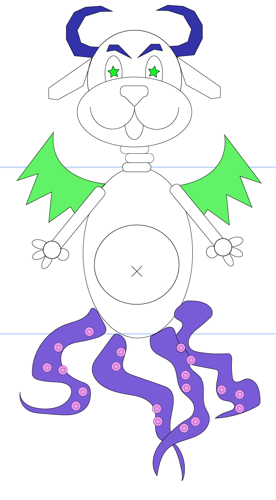
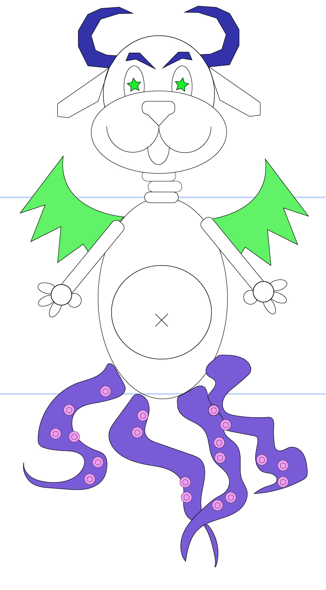

Exquisite Corpse
Description
This is a character that is a mash from three different original characters. I used the characters from Katie, Khushi, and Yulia which are pictured below, along with mine which is the robot. i took Katie's charater's head, Khushi's character's body and Yulia's character's feet.
 

Design Process
My design process was me just trying to make the characters as accurately as possible and then making it look like each part of the character match each other as closely as possible. I did this while still retaining what made them look like they still look like the original character's body part. I did have to make some parts of these characters, like almost the entirety of the legs as I do not understand beziers enough to figure it all out; I also used illustrator for the apple on the juice box.
Backstory
A social media influencer who is secretly apart of the the underworld and after a operation gone wrong in Chernoybyl, they grew tentacles as legs and had to go into hiding so they paintied their body blue, but keeoing their face as beautiful as it was before to keep their influenceer lifestyle.
Reflection
I found that curves are horrible. I despise them. Drawing tentacles with code would have been horrible. So I didn't. I made them in Illustrator and imported them into p5js using a converter. This made all sorts of long decimal points which required cleaning it up. There was over 100 lines of code just for curves. Never again. I refuse. Curves are horrible.